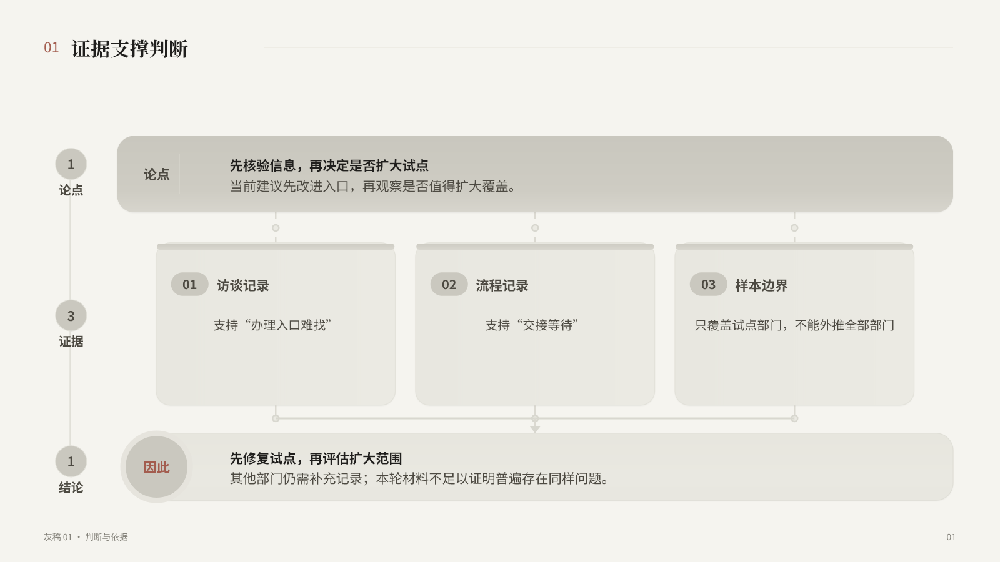
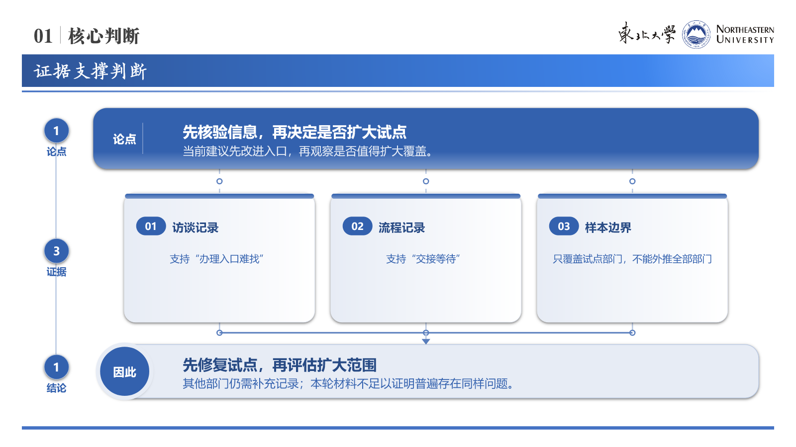

<!doctype html>
<html lang="zh-CN">
<meta charset="utf-8">
<meta name="viewport" content="width=device-width,initial-scale=1">
<title>灰稿 01 · Skin 美化试验</title>
<style>
  body{margin:0;background:#eef2f6;color:#1d2939;font:16px/1.6 system-ui,"Microsoft YaHei",sans-serif}
  main{width:min(1500px,calc(100% - 40px));margin:28px auto 48px}
  h1{margin:0 0 8px;font-size:28px}.note{color:#667085;margin:0 0 20px}
  .grid{display:grid;grid-template-columns:repeat(2,minmax(0,1fr));gap:20px}
  article{background:#fff;border:1px solid #d9e0ea;border-radius:12px;padding:14px;box-shadow:0 5px 18px #1d293914}
  h2{margin:0 0 10px;font-size:18px}img{display:block;width:100%;height:auto;border:1px solid #e3e8ef;border-radius:8px}
  a{color:#1265a8}p{margin:8px 0 0}@media(max-width:900px){.grid{grid-template-columns:1fr}}
</style>
<main>
  <h1>灰稿 01 · 证据支撑判断</h1>
  <p class="note">同一份灰稿内容分别套用两个 Skin；当前仅供人工验收，不代表全库已完成。</p>
  <div class="grid">
    <article><h2>中性 Skin</h2><p><a href="artifacts/gray-01-neutral.pptx">下载可编辑 PPTX</a></p></article>
    <article><h2>东北大学 Skin</h2><p><a href="artifacts/gray-01-university.pptx">下载可编辑 PPTX</a></p></article>
  </div>
</main>
